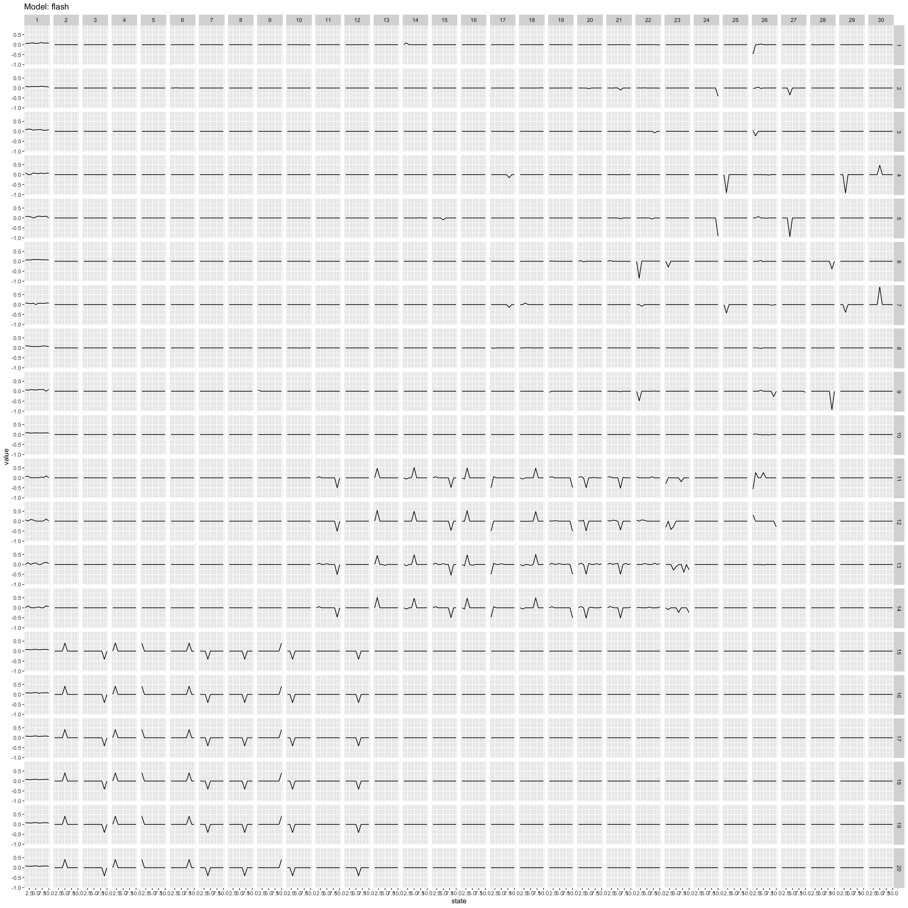
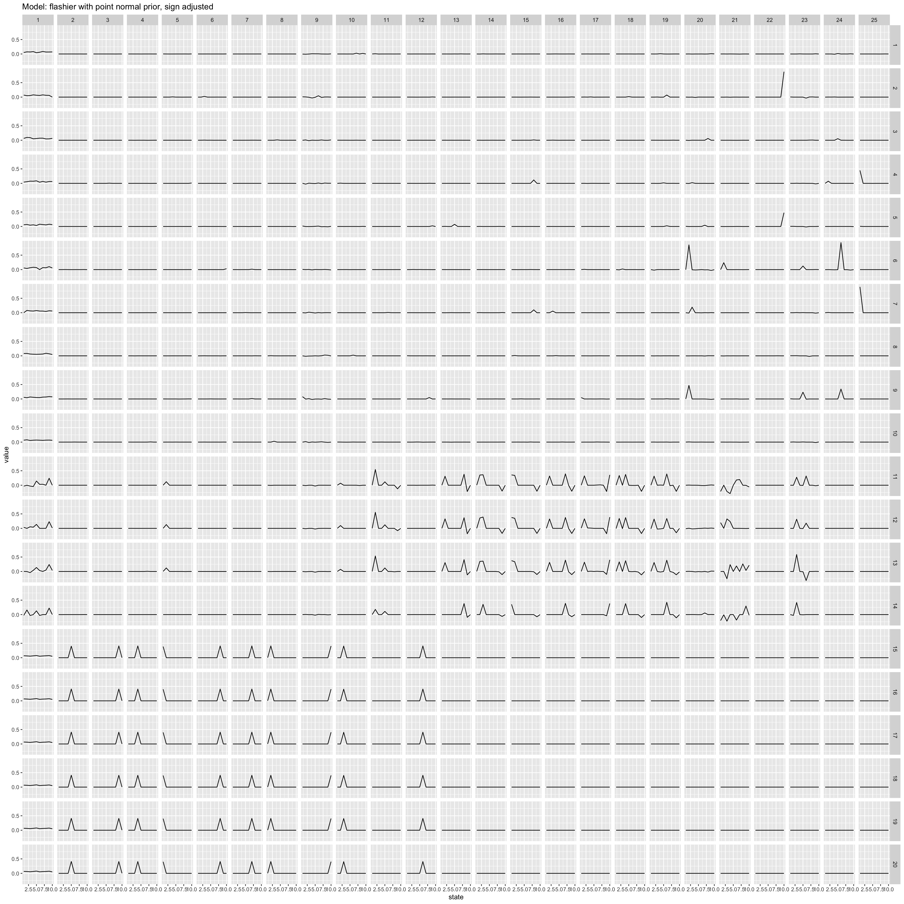

flashier on toy data
Joonsuk Kang
2020-03-23
Last updated: 2020-03-24
Checks: 7 0
Knit directory: aaint/
This reproducible R Markdown analysis was created with workflowr (version 1.6.0). The Checks tab describes the reproducibility checks that were applied when the results were created. The Past versions tab lists the development history.
Great! Since the R Markdown file has been committed to the Git repository, you know the exact version of the code that produced these results.
Great job! The global environment was empty. Objects defined in the global environment can affect the analysis in your R Markdown file in unknown ways. For reproduciblity it’s best to always run the code in an empty environment.
The command set.seed(20200315) was run prior to running the code in the R Markdown file. Setting a seed ensures that any results that rely on randomness, e.g. subsampling or permutations, are reproducible.
Great job! Recording the operating system, R version, and package versions is critical for reproducibility.
Nice! There were no cached chunks for this analysis, so you can be confident that you successfully produced the results during this run.
Great job! Using relative paths to the files within your workflowr project makes it easier to run your code on other machines.
Great! You are using Git for version control. Tracking code development and connecting the code version to the results is critical for reproducibility. The version displayed above was the version of the Git repository at the time these results were generated.
Note that you need to be careful to ensure that all relevant files for the analysis have been committed to Git prior to generating the results (you can use wflow_publish or wflow_git_commit). workflowr only checks the R Markdown file, but you know if there are other scripts or data files that it depends on. Below is the status of the Git repository when the results were generated:
Ignored files:
Ignored: .Rhistory
Ignored: .Rproj.user/
Ignored: analysis/.Rhistory
Untracked files:
Untracked: analysis/STRUCTURE.Rmd
Untracked: analysis/flash_pdz.Rmd
Untracked: analysis/ideas.Rmd
Untracked: analysis/mm_20200311.Rmd
Untracked: analysis/temp.Rmd
Untracked: analysis/test.Rmd
Untracked: code/convert_files_mat_to_text.R
Untracked: code/wflow_commands.R
Untracked: data/HG_FLU_hmmerbit_plmc_n5_m30_f50_t0.01_r1-565_id100_b282.a2m
Untracked: data/PDZ
Untracked: data/PDZ.mat
Untracked: data/PF00014_full_length_sequences.fasta
Untracked: data/admixture/
Untracked: data/align300_q10
Untracked: data/align300_q10.mat
Untracked: data/testdata1
Untracked: data/testsample
Untracked: data/testsample.csv
Untracked: data/testsample_factor
Untracked: output/structure/
Untracked: output/test/
Unstaged changes:
Modified: analysis/flash.Rmd
Note that any generated files, e.g. HTML, png, CSS, etc., are not included in this status report because it is ok for generated content to have uncommitted changes.
These are the previous versions of the R Markdown and HTML files. If you’ve configured a remote Git repository (see ?wflow_git_remote), click on the hyperlinks in the table below to view them.
| File | Version | Author | Date | Message |
|---|---|---|---|---|
| Rmd | fc04947 | Joonsuk Kang | 2020-03-24 | updating flashier and flash_omega |
| html | d35740a | Joonsuk Kang | 2020-03-24 | Build site. |
| Rmd | e0b8557 | Joonsuk Kang | 2020-03-24 | initial commit for flashier and flash_omega |
Data
Matrix \(A\) with \(dim(A)=N \times L\) and \(A_{ij}\in \{1,2,\dots,q\}\) where N=300 sequences; L=20 positions; q=10 potts-states
library(tidyverse)── Attaching packages ────────────────────────────────────────────────────────────── tidyverse 1.3.0 ──✓ ggplot2 3.3.0 ✓ purrr 0.3.3
✓ tibble 2.1.3 ✓ dplyr 0.8.4
✓ tidyr 1.0.2 ✓ stringr 1.4.0
✓ readr 1.3.1 ✓ forcats 0.5.0── Conflicts ───────────────────────────────────────────────────────────────── tidyverse_conflicts() ──
x dplyr::filter() masks stats::filter()
x dplyr::lag() masks stats::lag()data <- read_table2("data/align300_q10", col_names = FALSE)Parsed with column specification:
cols(
.default = col_double()
)See spec(...) for full column specifications.# change data type: from numeric to factor
data %>% mutate_if(is.numeric,as.factor) -> data
# change data type: from factor to binary dummies
library(fastDummies)
fastDummies::dummy_cols(data, remove_selected_columns=TRUE) -> data
data <- as.matrix(data)Baseline: results from flash
Previously, the estimated model had 44 factors. Here, we set the maximum number of factors as 30 to make comparison with other estimation results easier.
#library(flashr)
library(tictoc)
tic()
fit <- flashr::flash(data, backfit=TRUE, greedy=TRUE, verbose=FALSE,
Kmax=30) # at most 30 factorsWarning in verbose_obj_decrease_warning(): An iteration decreased the objective.
This happens occasionally, perhaps due to numeric reasons. You could ignore this
warning, but you might like to check out https://github.com/stephenslab/flashr/
issues/26 for more details.toc()15.407 sec elapsedfactor <- flashr::flash_get_ldf(fit)$f
l <- ncol(factor)
data.frame(factor = rep(1:l, each=200),
position = rep(rep(1:20, each=10), times=l),
state = rep(1:10, times=20*l),
value = c(factor)) %>%
ggplot()+geom_line(aes(x=state, y=value))+facet_grid(position~factor)+
ggtitle("Model: flash")
| Version | Author | Date |
|---|---|---|
| d35740a | Joonsuk Kang | 2020-03-24 |
# adjust the sign of factors so that the mean weight for each factor is positive
for (colidx in 1:ncol(factor)){
s <- sign(colMeans(factor))[colidx]
factor[,colidx] <- factor[,colidx]*s
}
data.frame(factor = rep(1:l, each=200),
position = rep(rep(1:20, each=10), times=l),
state = rep(1:10, times=20*l),
value = c(factor)) %>%
ggplot()+geom_line(aes(x=state, y=value))+facet_grid(position~factor)+
ggtitle("Model: flash, sign adjusted")
| Version | Author | Date |
|---|---|---|
| d35740a | Joonsuk Kang | 2020-03-24 |
Estimation with flashier package
The flashier package provides a variety of choices for prior distribution families. The results from a few relevant choices are shown below. Note that the flash package has point normal prior family as default option.
point normal prior (default)
The default for prior family is point normal: prior.family = prior.point.normal()
library(flashier)Registered S3 method overwritten by 'flashier':
method from
print.flash flashrtic()
fit <- flashier::flash(data, greedy.Kmax = 30, backfit=TRUE,
verbose.lvl = 0) # at most 30 factors
toc()15.904 sec elapsedfactor <- fit$loadings.pm[[2]]
l <- ncol(factor)
data.frame(factor = rep(1:l, each=200),
position = rep(rep(1:20, each=10), times=l),
state = rep(1:10, times=20*l),
value = c(factor)) %>%
ggplot()+geom_line(aes(x=state, y=value))+facet_grid(position~factor)+
ggtitle("Model: flashier with point normal prior")
| Version | Author | Date |
|---|---|---|
| d35740a | Joonsuk Kang | 2020-03-24 |
The fitted model with point normal prior fails to preserve the sparsity observed in the fitted model from baseline flash model, though taking the same point normal prior.
nonnegative prior
#library(flashier)
tic()
fit <- flashier::flash(data, greedy.Kmax = 30, backfit=TRUE,
prior.family = prior.nonnegative(),
verbose.lvl=0) # at most 30 factorsWarning in scale.EF(EF): Fitting stopped after the initialization function
failed to find a non-zero factor.toc()32.09 sec elapsedfactor <- fit$loadings.pm[[2]]
l <- ncol(factor)
data.frame(factor = rep(1:l, each=200),
position = rep(rep(1:20, each=10), times=l),
state = rep(1:10, times=20*l),
value = c(factor)) %>%
ggplot()+geom_line(aes(x=state, y=value))+facet_grid(position~factor)+
ggtitle("Model: flashier with nonnegative prior")
| Version | Author | Date |
|---|---|---|
| d35740a | Joonsuk Kang | 2020-03-24 |
The fitted model with nonnegative prior has smaller number of factors (18) than the other fitted models, which stop only after hitting the maximum setting (30). The model captures the two strong correlation structures in positions 11-14 and 15–20, but fails to identify factors which capture correlation structures in 1–10, which are independent from the structures in 11-20.
point laplace prior
#library(flashier)
tic()
fit <- flashier::flash(data, greedy.Kmax = 30, backfit=TRUE,
prior.family = prior.point.laplace(),
verbose.lvl=0) # at most 30 factors
toc()23.524 sec elapsedfactor <- fit$loadings.pm[[2]]
l <- ncol(factor)
data.frame(factor = rep(1:l, each=200),
position = rep(rep(1:20, each=10), times=l),
state = rep(1:10, times=20*l),
value = c(factor)) %>%
ggplot()+geom_line(aes(x=state, y=value))+facet_grid(position~factor)+
ggtitle("Model: flashier with point laplace prior")
| Version | Author | Date |
|---|---|---|
| d35740a | Joonsuk Kang | 2020-03-24 |
normal scale mixture prior
#library(flashier)
tic()
fit <- flashier::flash(data, greedy.Kmax = 30, backfit=TRUE,
prior.family = prior.normal.scale.mix(),
verbose.lvl=0) # at most 30 factors
toc()153.027 sec elapsedfactor <- fit$loadings.pm[[2]]
l <- ncol(factor)
data.frame(factor = rep(1:l, each=200),
position = rep(rep(1:20, each=10), times=l),
state = rep(1:10, times=20*l),
value = c(factor)) %>%
ggplot()+geom_line(aes(x=state, y=value))+facet_grid(position~factor)+
ggtitle("Model: flashier with normal scale mixture prior")
| Version | Author | Date |
|---|---|---|
| d35740a | Joonsuk Kang | 2020-03-24 |
Fitted models with Point laplace or normal scale mixture prior produce similar factors as in baseline flash.
Time-wise, the flash took 16 seconds, which is on par with point normal prior (default of flashier). Point laplace prior takes x0.5 more time and nonnegative prior x1 more time. Normal scale mixture prior took the longest.
sessionInfo()R version 3.6.1 (2019-07-05)
Platform: x86_64-apple-darwin15.6.0 (64-bit)
Running under: macOS Catalina 10.15.3
Matrix products: default
BLAS: /Library/Frameworks/R.framework/Versions/3.6/Resources/lib/libRblas.0.dylib
LAPACK: /Library/Frameworks/R.framework/Versions/3.6/Resources/lib/libRlapack.dylib
locale:
[1] en_US.UTF-8/en_US.UTF-8/en_US.UTF-8/C/en_US.UTF-8/en_US.UTF-8
attached base packages:
[1] stats graphics grDevices utils datasets methods base
other attached packages:
[1] flashier_0.2.4 tictoc_1.0 fastDummies_1.6.1 forcats_0.5.0
[5] stringr_1.4.0 dplyr_0.8.4 purrr_0.3.3 readr_1.3.1
[9] tidyr_1.0.2 tibble_2.1.3 ggplot2_3.3.0 tidyverse_1.3.0
[13] workflowr_1.6.0
loaded via a namespace (and not attached):
[1] httr_1.4.1 jsonlite_1.6.1 modelr_0.1.6 assertthat_0.2.1
[5] mixsqp_0.3-17 cellranger_1.1.0 yaml_2.2.1 ebnm_0.1-24
[9] pillar_1.4.3 backports_1.1.5 lattice_0.20-38 glue_1.3.1
[13] digest_0.6.25 promises_1.1.0 rvest_0.3.5 colorspace_1.4-1
[17] htmltools_0.4.0 httpuv_1.5.2 Matrix_1.2-18 plyr_1.8.6
[21] pkgconfig_2.0.3 invgamma_1.1 broom_0.5.5 haven_2.2.0
[25] scales_1.1.0 whisker_0.4 later_1.0.0 git2r_0.26.1
[29] farver_2.0.3 generics_0.0.2 withr_2.1.2 ashr_2.2-47
[33] cli_2.0.2 magrittr_1.5 crayon_1.3.4 readxl_1.3.1
[37] evaluate_0.14 fs_1.3.2 fansi_0.4.1 nlme_3.1-143
[41] xml2_1.2.2 truncnorm_1.0-8 tools_3.6.1 data.table_1.12.8
[45] hms_0.5.3 softImpute_1.4 lifecycle_0.2.0 munsell_0.5.0
[49] reprex_0.3.0 irlba_2.3.3 compiler_3.6.1 rlang_0.4.5
[53] grid_3.6.1 rstudioapi_0.11 labeling_0.3 rmarkdown_2.1
[57] gtable_0.3.0 DBI_1.1.0 reshape2_1.4.3 flashr_0.6-7
[61] R6_2.4.1 lubridate_1.7.4 knitr_1.28 rprojroot_1.3-2
[65] stringi_1.4.6 parallel_3.6.1 SQUAREM_2020.2 Rcpp_1.0.3
[69] vctrs_0.2.3 dbplyr_1.4.2 tidyselect_1.0.0 xfun_0.12